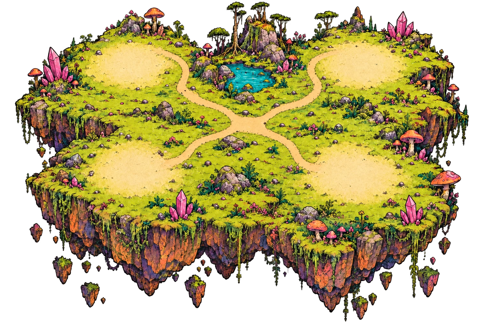
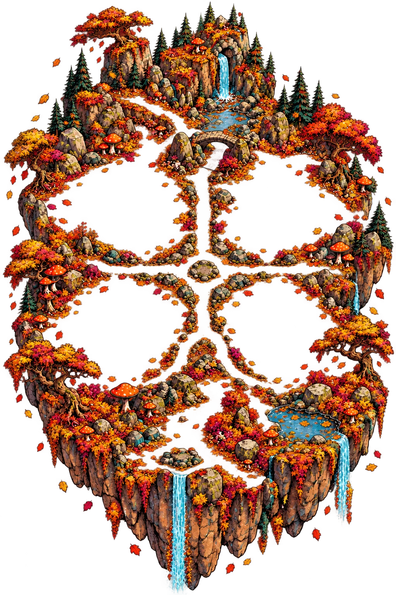

Acid Goblin Town


Tap a place to peek · tap again to enter
Ask who built this odd little town.
Field guides, zines and a very patient teacup.
Enter Bookshop ↗Fresh pocket papers and improbable headlines.
Enter Newsstand ↗Three cards, one chatty seer, a way through.
Enter Oracle ↗Free posters for the wall, window or void.
Enter Merch ↗Touch to bend the colours. Sound if you fancy.
Enter Trippa ↗Two scraps. One very unsafe lever.
Enter Yard ↗One pebble buys one dubious secret.
Toss a pebble ↗Make a postcard for anywhere-ish.
Make a card ↗Roads approximate · curiosity encouraged
Pick a place